Abstract
Air pollution is widely recognized as one of the most critical environmental and public health threats of the 21st century, contributing significantly to global mortality. This research examines the relationship between air pollution exposure and mortality trends on a global scale by integrating three robust, open-access datasets including the State of Global Air, the IHME Death Data with Causes, and the World Bank Population Dataset. These datasets were selected from an initial pool of seven based on their global coverage, temporal depth, data quality, and relevance to public health outcomes.
Using advanced statistical methods and machine learning techniques, this research explores temporal patterns, regional disparities, and population-level vulnerabilities associated with major pollutants, particularly fine particulate matter (PM₂.₅), ozone (O₃), household air pollutant (HAP) and nitrogen dioxide (NO₂). Incorporating population data enables the calculation of per-capita mortality rates, ensuring valid cross-country comparisons and preventing biases driven by differences in national population sizes.
The findings offer critical insights for policymakers, public health authorities, and researchers by identifying high-risk populations and geographic hotspots, and reinforcing the urgency of targeted interventions and stricter air quality standards. Overall, this study demonstrates the potential of data science to address complex, interdisciplinary challenges in environmental epidemiology and global health.
Introduction
Air pollution is one of the most concerning environmental health challenges of our time. The World Health Organization defines it as the presence of harmful substances in the atmosphere, including fine particulate matter (PM₂.₅ and PM₁₀), nitrogen dioxide (NO₂), ozone (O₃), sulphur dioxide (SO₂), and carbon monoxide (CO). Among these, fine particulate matter (PM₂.₅) is particularly harmful because it can penetrate deep into the lungs, enter the bloodstream, and contribute to diseases such as cardiovascular illness, chronic respiratory disease, and premature death. Global assessments show that air pollution is one of the top risk factors for early mortality, responsible for millions of deaths each year (Cohen, et al., 2017) (Di, et al., 2017).
1.1 Background and Motivation
Over the past three decades, progress has been made in monitoring and reducing air pollution. However, the global burden of disease remains high. Estimates suggest that in 2015 alone, exposure to PM₂.₅ caused about 4.2 million deaths worldwide, while ozone exposure caused an additional 254,000 deaths, making air pollution one of the leading global health risks (Cohen, et al., 2017). Importantly, evidence shows that health effects can occur even when air pollution levels are below the legal limits set by international agencies such as the World Health Organization (WHO) and the U.S. Environmental Protection Agency (EPA) (Di, et al., 2017).
This makes continuous monitoring and deeper understanding of the risks essential. The motivation for this research comes from recognising that air pollution is not only a local or regional problem, but a global one. With the increasing availability of large, high-quality datasets, we can now study mortality patterns across countries and decades, linking pollution exposure to health outcomes in new ways. Using data science techniques to uncover these patterns offers a powerful opportunity to better understand risks, identify long-term trends, and generate evidence that can support public health decisions worldwide.
1.2 Problem Statement
Despite strong evidence linking air pollution with mortality, most existing studies have key limitations. Many focus on specific regions or short time periods, which restricts understanding of long-term global trends. Few studies integrate pollution, cause-of-death, and population datasets to assess how mortality varies over time when adjusted for population size.
Another major concern is that health risks are observed even when pollution levels are below the safety thresholds set by international agencies such as the World Health Organization (WHO) and the U.S. Environmental Protection Agency (EPA) (Cohen, et al., 2017) (Di, et al., 2017). This raises doubts about whether current air quality standards are sufficient to protect public health.
The problem this analysis addresses is the lack of a comprehensive, global, population-adjusted analysis of how major pollutants (PM₂.₅, NO₂, household air pollution, and O₃) contribute to cause-specific mortality from 1990 to 2020.
1.3 Objectives
The main objective of this analysis is to evaluate how long-term exposure to air pollution contributes to mortality across countries, population sizes, and time periods.
To achieve this, the study pursues the following specific objectives:
- To quantify the relationship between exposure to key pollutants (PM₂.₅, O₃, HAP and NO₂) and all-cause and cause-specific mortality using globally corresponding datasets, while adjusting mortality rates relative to national population sizes.
- To assess whether pollution exposure remains a significant mortality risk even at concentrations below current international safety thresholds, such as those set by the WHO and U.S EPA.
- To identify and compare global, regional, and national temporal trends in both pollution levels and population-adjusted mortality, evaluating changes over time from 1990 to 2020.
- To visualize key findings using advanced data visualisation techniques such as time-series plots, heat maps, choropleth maps, and scatter plots highlight geographic hotspots and temporal variations.
- To apply both traditional statistical tools (e.g., Pearson correlation, linear and multiple regression) and data-driven modelling approaches (e.g., stratified analysis, predictive modelling, composite pollution index modelling) to provide a multidimensional view of the problem.
- To contribute to global environmental health by identifying at-risk populations and highlighting areas where stronger regulations or targeted interventions could deliver the greatest health benefits.
1.4 Research Questions
- What are the long-term global and regional trends in air pollution levels, particularly PM₂.₅ and ozone, over the past three decades?
- How does long-term exposure to air pollution correlate with population-adjusted, cause-specific mortality, including deaths from cardiovascular, respiratory, and cancer-related diseases?
- Which countries and regions show the highest mortality burden from air pollution once adjusted for population size?
- Which air pollutants and related factors are the strongest predictors of increased mortality when analysed using data science methods such as correlation analysis, regression models, and clustering?
1.5 Impact and Significance
The findings of this research have both scientific and practical importance. Scientifically, the study contributes to a growing body of evidence on how long-term exposure to air pollution affects health worldwide. By applying advanced statistical and machine learning techniques to global datasets, this analysis shows the value of integrating data science with public health research.
From a policy perspective, the results can help international agencies, governments, and local authorities in setting or revising air quality standards. If the analysis shows that health risks persist below current thresholds, that calls for stricter regulations. If pollutants are identified as hotspots, it can help target interventions where they are most needed.
More broadly, this research highlights the human and societal costs of air pollution, framing it not only as an environmental issue but also as a matter of global health equity. By adjusting mortality rates for population size and tracking changes over time, this research provides a fairer and more comprehensive view of how air pollution affects global mortality.
Dataset Gathering & Selection
2.1 Initial Exploration
A crucial step in this research was identifying datasets capable of supporting a strong investigation into the relationship between air pollution and mortality. The goal was to find sources offering global coverage over an extended time frame, with well-documented and clean variables, and a clear link between pollution indicators and mortality outcomes.
The dataset search was conducted through academic databases (Google Scholar, ScienceDirect, Kaggle, GitHub), institutional repositories such as the World Health Organization (WHO), and open-access environmental data portals. More than a dozen datasets were identified, each differing in geographic coverage, temporal depth, and thematic relevance. After an initial check for completeness, ease of access, and relevance to the research goals, seven datasets were selected for closer evaluation.
2.2 Dataset Selection
Following the exclusion process, three datasets emerged as the most suitable for meeting the research objectives: the State of Global Air Dataset and the IHME Death Data with Causes (Global Burden of Disease). Their strengths lie in their methodological robustness, breadth of coverage, and direct relevance to studying the air pollution-mortality relationship. A third dataset, the World Bank Population Dataset was included to ensure comparability of results across countries of different sizes.
2.2.1 State of Global Air Dataset
- Source: Health Effects Institute.
- Content: Provides global, annual, population-weighted data on pollutant levels including PM₂.₅, household air pollution (HAP), NO₂, and ambient ozone for more than 200 countries from 1990 through 2021 (Health Effects Institute, 2024).
- Justification: This dataset gives the exposure side of the analysis. It offers long-term, reliable measures of major pollutants, which are essential for identifying trends and making fair comparisons across countries and regions.
2.2.2 IHME Death Data with Causes (Global Burden of Disease)
- Source: Institute for Health Metrics and Evaluation.
- Content: This dataset provides yearly cause-specific mortality data for 206 countries, covering the period from 1990 to 2023 (with historical estimates available back to the 1960s). It includes more than 300 diseases, conditions, and injuries as causes of death (Institute for Health Metrics and Evaluation, 2024).
- Justification: This dataset was selected because it offers detailed information on deaths by specific causes across more than 200 countries for over three decades. When combined with the State of Global Air dataset, it allows the study to connect pollution exposure with health outcomes in a clear and reliable way.
2.2.3 Population Dataset
- Source: The population dataset was obtained from the datasets/population repository on GitHub (DataHub.io, 2025). Unlike platforms such as Kaggle, where individuals can freely upload datasets, this repository is maintained by Datahub.io, a well-regarded open data provider that aggregates and standardizes datasets from official sources. The dataset is not user-generated but is compiled directly from the official World Bank data (World Bank, 2023), as confirmed in the repository's documentation. The repository has strong community recognition (over 100 stars on GitHub), indicating trust and active use.
-
Data Origins: The World Bank dataset itself
compiles data from several authoritative international and national
demographic sources, including:
- United Nations Population Division (World Population Prospects)
- United Nations Statistical Division (Population and Vital Statistics Reports, various years)
- Census reports and other publications from national statistical offices
- Eurostat (Demographic Statistics)
- Secretariat of the Pacific Community (Statistics and Demography Programme)
- U.S. Census Bureau (International Database)
- Content: Provides annual population figures for countries, regions (e.g., Asia), and the world, covering 1960 onwards. For this research, data for 1990–2020 were extracted to match the time range of the mortality and pollution datasets.
- Justification: Population adjustment was essential to avoid misleading results. Absolute death counts can exaggerate the burden in highly populated countries and underestimate it in smaller ones. By adjusting mortality figures relative to population size (e.g., Crude Death Rate per 1000 people or Population Growth Rate), the analysis ensures fair comparisons across countries and years. This reduces bias and prevents countries being misclassified as "outliers" simply due to population scale rather than true underlying risk. Using per-capita measures therefore provides results that are more accurate, balanced, and meaningful for cross-country and temporal analysis.
Data Preprocessing
3.1 Overview
Before conducting statistical modelling and analysis, it was essential to prepare the raw datasets to ensure reliability, consistency, and compatibility with each other. The data originated from different sources and therefore varied in format and structure. To achieve comparability, a structured preprocessing was implemented. This included selection of analytically relevant features, standardisation of variable names and data types, handling of missing values, detection and handling of outliers and alignment of country-year identifiers. Each dataset was first cleaned individually and subsequently integrated into a unified master dataset covering 1990–2020.
3.2 Pollutants Data
The pollutants dataset was compiled from four CSV files containing annual country-level exposure estimates for Household Air Pollution (HAP), Nitrogen Dioxide (NO₂), Ozone (O₃), and Particulate Matter (PM₂.₅). Raw files contained Excel-style artefacts (e.g., values stored as "=Country"), which were corrected using string replacement and type conversion to ensure numerical compatibility.
3.2.1 Feature Selection
Feature selection focused on retaining only essential attributes. Redundant identifiers were excluded as they duplicated existing information or provided no analytical value. A detailed list of dropped features is:
| Feature Name | Reason to Drop |
|---|---|
| Exposure Id | Serves as a unique identifier thus, does not offer analytical value. |
| Type | Contains a single constant value, "Country", indicating the level of aggregation which provides no variability or insight. |
| ISO3 | Merely reiterates the country designation in ISO3 format which was redundant alongside the full country name. |
| Region | Contains only two values, distinguishing whether a record pertains to a region or country, information already implied or unneeded in our use case. |
| Pollutant | Although it specifies the pollutant type, we will refactor exposure metrics by applying suffix of pollutant name, making this column unnecessary. |
| Pollutant Name | A duplicate of the Pollutant column, thus redundant. |
| Region Name | Uniformly states "GDB Region" for relevant rows and offers no analytical distinction. |
| Units | Indicates the measurement units for pollutants. While relevant from a reporting standpoint, the unit is consistent across datasets and will be addressed in the methodological literature. Hence, its repetition in every row is unnecessary. |
Each dataset was therefore reduced to six key fields:
- Country: specifying the name of country.
- Region Name: reflecting more accurately the contents of the column, which specifies regional labels.
- Year: records the year of data collection; necessary for temporal trend analysis.
-
Exposure estimates:
- Exposure Mean: specifying the average rate of respective pollutant.
- Exposure Lower: specifying the lower bound, likely the 95% confidence interval representing uncertainty in data collection.
- Exposure Upper: specifying the upper bound, likely the 95% confidence interval representing uncertainty in data collection.
3.2.2 Outlier Detection
Outlier detection for environmental time series data requires special consideration, since pollution levels naturally change over time due to industrialization, policy changes, and other factors. Using traditional methods such as IQR across the entire dataset can incorrectly flag outliers, simply because they represent a different time period.
Given that our dataset has yearly granularity, with only one observation per country per year, detection approaches need to account for this structure. We implemented and compared the following methods:
- Year-Specific Comparison: For each year, pollution levels are compared across all countries, identifying countries with unusually high or low values relative to global patterns for that specific year.
- Country-Specific Temporal Deviation: Each country's historical pattern is analysed to identify years that deviate significantly from the country's expected temporal trend.
These approaches account for both the yearly granularity of the data and the importance of considering temporal trends when identifying genuine outliers in environmental datasets. Since the dataset was gathered from reputable sources, it was expected that there would be no true outliers in the data.
3.2.3 Resultant Dataset
We merged the 4 files into 1 master pollutant dataset and to avoid ambiguity when merging pollutants, variable names were standardised with pollutant-specific suffixes (e.g., Exposure Mean PM₂.₅, Exposure Mean NO₂). The four datasets were merged on Country and Year, producing a consolidated panel of multi-pollutant exposures.
3.3 Mortality Data
Mortality data were obtained from the Global Burden of Disease (GBD) study (IHME) and comprised 4 large CSV files containing almost 5 lac rows each. As the files represented different subsets of causes and locations, preprocessing aimed to obtain fully concatenated dataset catering the complete cause-specific mortality distribution of 3 decades for 200 countries.
3.3.1 Feature Selection
Feature selection focused on retaining only essential attributes. Redundant identifiers were excluded as they duplicated existing information or provided no analytical value. A detailed list of dropped features is:
| Feature Name | Reason to Drop |
|---|---|
| measure_name | Always indicates "Death", adding no analytical value. |
| sex_name | Always indicates "BOTH", adding no analytical value. |
| age_id | Always indicates "All Ages", adding no analytical value. |
| metric_name | Always indicates "Number", offering no variation or additional insight. |
| sex_id | A unique identifier for sex which was not needed for analysis. |
| measure_id | A unique identifier for the measure which was not needed for analysis. |
| location_id | A unique identifier for the location which was not needed for analysis. |
| cause_id | A unique identifier for the cause which was not needed for analysis. |
| metric_id | A unique identifier for the metric, irrelevant to the analysis. |
3.3.2 Duplication Detection
Since each record in the ultimate dataset represents number of deaths in a country caused by a specific cause, we checked for duplicates in dataset based on country, year, and cause and there were none found indicating the well reputed source's authenticity.
3.3.3 Resultant Dataset
Thus, after merging and some renaming ultimately the dataset was in one file with 1,467,168 rows and these 6 columns:
- Country: specifying the name of country, necessary for regional analysis.
- Cause: specifying the cause of death.
- Year: records the year of data collection, necessary for temporal trend analysis.
- Deaths: indicating the average number of deaths.
- Deaths Upper: specifying the upper limit of uncertainty in data collection.
- Deaths Lower: specifying the lower limit of uncertainty in data collection.
3.4 Population Data
Population data were sourced from the World Bank, covering the period 1960–2023. The dataset was trimmed to the analysis window (1990–2020) and reduced to three attributes: Country, Year, and Population. Redundant Country Code feature was removed. No missing values or outliers were detected in this data as well explaining the authenticity of origin as well as source.
Data Consolidation
The three datasets: pollutants, mortality, and population were harmonised through careful alignment of country identifiers and temporal coverage. Using the pollutants dataset as the base, mortality counts, and population figures were merged by Country-Year. This enabled the derivation of per-capita mortality rates alongside exposure estimates. Post-merge validation confirmed that no records were lost, no new missing values were introduced, and all values were consistent with official demographic and health statistics.
Clean
State of Global Air — Preprocessing
IHME Death Data — Preprocessing
World Bank Population — Preprocessing
Merge & Clean Process
The final master dataset contained annual exposure estimates (PM₂.₅, NO₂, O₃, HAP), cause-specific mortality counts, and population sizes for each country between 1990 and 2020. This dataset forms the foundation for subsequent exploratory and statistical analysis.
| Variable | Type | Unit | Description | Source |
|---|---|---|---|---|
| Country | String | – | Country name (harmonised across datasets) | All datasets |
| Year | Integer | Year | Calendar year (1990–2020) | All datasets |
| Population | Integer | Persons | Mid-year population estimate | World Bank |
| Exposure Mean PM₂.₅ | Float | μg/m³ | Annual mean PM₂.₅ exposure | State of Global Air |
| Exposure Lower PM₂.₅ | Float | μg/m³ | Lower bound (95% CI) for PM₂.₅ | State of Global Air |
| Exposure Upper PM₂.₅ | Float | μg/m³ | Upper bound (95% CI) for PM₂.₅ | State of Global Air |
| Exposure Mean NO₂ | Float | ppb | Annual mean NO₂ exposure | State of Global Air |
| Exposure Lower NO₂ | Float | ppb | Lower bound (95% CI) for NO₂ | State of Global Air |
| Exposure Upper NO₂ | Float | ppb | Upper bound (95% CI) for NO₂ | State of Global Air |
| Exposure Mean O₃ | Float | ppb | Annual mean O₃ exposure | State of Global Air |
| Exposure Lower O₃ | Float | ppb | Lower bound (95% CI) for O₃ | State of Global Air |
| Exposure Upper O₃ | Float | ppb | Upper bound (95% CI) for O₃ | State of Global Air |
| Exposure Mean HAP | Float | μg/m³ | Annual mean Household Air Pollution exposure | State of Global Air |
| Exposure Lower HAP | Float | μg/m³ | Lower bound (95% CI) for HAP | State of Global Air |
| Exposure Upper HAP | Float | μg/m³ | Upper bound (95% CI) for HAP | State of Global Air |
| Cause | String | – | Cause of death (as per IHME GBD coding) | IHME GBD |
| Deaths | Integer | Counts | Central estimate of death counts | IHME GBD |
| Deaths Lower | Integer | Counts | Lower bound (95% CI) of deaths | IHME GBD |
| Deaths Upper | Integer | Counts | Upper bound (95% CI) of deaths | IHME GBD |
You can find the complete comprehensive consolidated dataset on Kaggle:
View on Kaggle — Pollutants, Cause of Death, Mortality & PopulationFeature Engineering
In this section, we develop a set of quantitative measures to evaluate global air pollution exposure and its human impact. These formulas capture different dimensions of the problem: from population-weighted exposure levels and indexed trends to combined pollution indices, total human impact, and weighted correlations between pollutants. Together, they provide a consistent framework for comparing exposures across countries, pollutants, and years, while ensuring that results reflect real population sizes and global health relevance.
4.1 Global Population-Weighted Exposure
Definition
A measure of the average pollutant exposure for the global population in a given year, weighting each country's exposure by its population size.
Purpose
Ensures global averages reflect population size. Larger populations influence the global mean more than smaller ones, giving a realistic measure of worldwide exposure.
4.2 Combined Pollution Index (CPI)
Definition
The CPI aggregates multiple pollutants into a single score, making them comparable by normalization. It reflects the overall pollution burden across pollutants.
Purpose
Provides a dimensionless, comparable score across pollutants. Countries with high exposure to multiple pollutants score higher, highlighting the overall pollution burden instead of focusing on one pollutant.
4.3 Pollution Burden (Total Human Impact)
Definition
Total Human Impact measures the overall pollution burden on a country's population. It combines pollution intensity (CPI) with population size, showing both how polluted a country is and how many people are affected.
Purpose
Captures the true human burden of pollution by including both intensity and population. Log-scaling reduces skew from very large countries (e.g., China, India), and normalization makes results comparable across countries and years.
- 100: country with maximum global impact (after log-scaling)
- 0: country with minimum global impact
- 50: median global impact after scaling
- Log-scaling reduces extreme outliers while keeping comparisons meaningful.
4.4 Weighted Pearson Correlation
Definition
The weighted Pearson correlation measures the linear relationship between two variables when each observation has a weight. Here, each country-year is weighted by its population, so the correlation reflects the relationship as experienced by the average person, not the average country.
- \(w_i\): weight (population of country \(i\))
- \(x_i, y_i\): exposure values for two pollutants
- \(\mu_x, \mu_y\): weighted means of \(x\) and \(y\)
Represents the average value, adjusted for population size.
Reduces to standard Pearson correlation if all \(w_i\) are equal.
Purpose
Weighted correlation ensures larger populations influence results more than small ones, making it representative of real human exposure.
- If unweighted: each country contributes equally, regardless of population size.
- If weighted: larger countries contribute more, reflecting global experience more accurately.
Analysis
As the world has industrialized and urbanized over the past three decades, a fundamental question to assess is: Are we winning or losing the battle against air pollution? While headlines often focus on individual cities or dramatic events, the global picture requires a data-driven lens to understand the complex relationship between pollution exposure, population dynamics and human health outcomes. This analysis employs population weighted metrics rather than simple country averages which is a crucial methodological choice that ensures our insights reflect human impact, not just geography. When we say "global air quality is improving" we mean the average person's exposure is declining, not just that more countries happen to have better air. The answers we uncover will inform billions of dollars in public health investments and policy decisions affecting billions of lives. By the end of this analysis, we'll know not just whether air quality is improving globally but where progress is happening, what drives it and how it translates into human health outcomes.
Analysis — Pollutants
5.1 Pollutants
5.1.1 Global Pollutants at a Glance
To start with, we can see through three decades of global air quality data and answer that after three decades of environmental policies, economic development and technological innovation, is the world's air getting cleaner or dirtier?
Upon analysing, we figured out that it's not straightforward because different pollutants tell different stories. Success with one pollutant doesn't guarantee success with others. We computed a population weighted global average index of pollutant while considering 1990 as baseline and concluded that three pollutants improved dramatically while Ozone worsens, revealing the chemical complexity of air quality management.
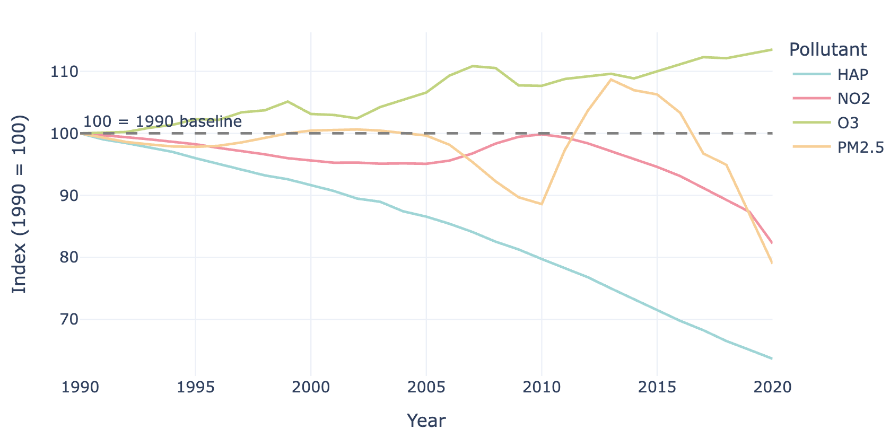
From the table below, we can see that HAP represents public health's greatest victories with a 36% decline showing that hundreds of millions gained access to clean cooking fuels. It can be driven by rural electrification, LPG subsidies such as India's Ujjwala Yojana (PMUY & Wikipedia, 2016) and other economic developments. The deadliest air pollutant PM₂.₅ also declined 21% which reflects successful implementation of air quality standards, industrial controls, and better urban planning. Another important pollutant majorly caused by transportation and vehicle emissions is NO₂ which declined about 18% which can be based on initiatives like strict Euro standards and Clean Air Act (Castellanos & Boersma, 2012) (Krotkov, et al., 2017). Another factor can be increase in the use of electric vehicles (Chang, Huang, & Chaveste, 2023).
| Pollutant | Percentage Change |
|---|---|
| HAP | -36.34% |
| NO₂ | -17.75% |
| PM₂.₅ | -21.02% |
| O₃ | +13.51% |
We saw a global trend of pollutants which motivates us to drilling into geographical aspects to explain these trends better. To investigate the trends of pollutants, it's best to see the most populous countries and their individual trends. The approach to weight by population is important since a 1% improvement in China affects 14 million people and in contrast a 10% improvement in Iceland would only affect 37,000 people.
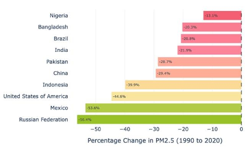
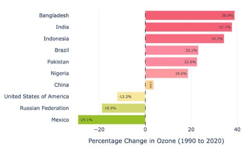
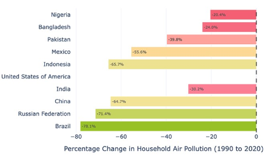
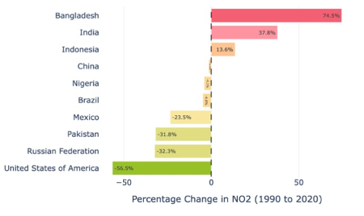
Particulate Matter 2.5
We can see difference in trends for different pollutants from the above figures. The global PM₂.₅ shows a slight increase in early 2000s before a sharp drop after 2013 (shown in Figure 1). The initial bump corresponds to surging industrial growth and pollution in rapidly developing nations (particularly in Asia), followed by improvements as pollution control measures took effect. Seeing Figure 2, we can see that all top 10 populous countries showed PM₂.₅ reductions from 1990 to 2020. Notably, China's aggressive air quality policies in the 2010s including the "Air Pollution Prevention and Control Action Plan" of 2013 likely contributed to the post-2013 global PM₂.₅ decline. Based on our data, China's average PM₂.₅ exposure fell from 49.3 to 34.8 μg/m³ resulting in a 29.4% decrease. While all countries showed PM₂.₅ reductions from 1990 to 2020, it's important to note that current levels in many countries still vastly exceed the WHO guideline of 5 μg/m³.
Ozone
The global Ozone trend reveals a different pattern compared to other pollutants. Unlike others which showed significant improvements, Ozone levels have remained relatively upward. Ozone is a secondary pollutant formed through complex photochemical reactions involving precursor emissions (NOₓ and VOCs) and influenced by temperature and sunlight intensity. Countries in Asia like Bangladesh, India, Indonesia, Pakistan & China notably contributed in ozone. The cause can be rising temperature due to climate change or increased urbanization and motorization in developing countries leading to higher NOₓ and VOC emissions.
Nitrogen Dioxide
Unlike PM₂.₅ which showed moderate overall decline, and unlike ozone which showed consistent increases, NO₂ demonstrates a more complex pattern with a relatively stable period in the 1990s, a notable peak around 2005–2010 and a significant decline after 2010. The peak period corresponds to rapid industrialization in developing countries, particularly in Asia while the post-2010 decline likely reflects the impact of:
- Stricter vehicle emission standards (Euro 6, Tier 3, etc.)
- Increased adoption of catalytic converters and NOₓ reduction technologies
- Shifts toward cleaner fuels and renewable energy in power generation
- Targeted urban air quality management in major cities
We see Bangladesh, India & Indonesia having substantial deterioration in NO₂ levels which highlights how economic development pathways and regulatory approaches strongly influence air quality outcomes, with NO₂ reductions being most challenging in rapidly urbanizing regions and increasing vehicle fleets.
Household Air Pollution
The global household air pollution trend reveals a steady decline over the past three decades, indicating substantial progress in reducing indoor air pollution worldwide with Brazil having the largest percentage reduction. This decreasing trend is particularly significant in high income countries through access to clean cooking and electricity thus, HAP primarily affects rural and low-income populations.
| Country | 1990 | 2020 | Percentage |
|---|---|---|---|
| USA | 33.30 | 14.50 | -56.456456 |
| Russia | 26.60 | 18.00 | -32.330827 |
| Pakistan | 15.70 | 10.70 | -31.847134 |
| Mexico | 21.30 | 16.30 | -23.474178 |
| Brazil | 14.50 | 13.80 | -4.827586 |
| Nigeria | 6.84 | 6.56 | -4.093567 |
| China | 13.80 | 13.60 | -1.449275 |
| Indonesia | 5.82 | 6.61 | 13.573883 |
| India | 8.78 | 12.10 | 37.813212 |
| Bangladesh | 6.59 | 11.50 | 74.506829 |
| Country | 1990 | 2020 | Percentage |
|---|---|---|---|
| USA | 0.00 | 0.00 | NaN |
| Russia | 0.07 | 0.02 | -71.428571 |
| Pakistan | 0.83 | 0.50 | -39.759036 |
| Mexico | 0.27 | 0.12 | -55.555556 |
| Brazil | 0.32 | 0.07 | -78.125000 |
| Nigeria | 0.93 | 0.74 | -20.430108 |
| China | 0.85 | 0.30 | -64.705882 |
| Indonesia | 0.67 | 0.23 | -65.671642 |
| India | 0.86 | 0.60 | -30.232558 |
| Bangladesh | 0.69 | 0.73 | -23.958333 |
| Country | 1990 | 2020 | Percentage |
|---|---|---|---|
| USA | 49.1 | 43.1 | -12.219959 |
| Russia | 44.0 | 35.7 | -18.863636 |
| Pakistan | 52.3 | 64.1 | 22.562141 |
| Mexico | 60.4 | 42.8 | -29.139073 |
| Brazil | 32.9 | 40.5 | 23.100304 |
| Nigeria | 45.2 | 53.6 | 18.584071 |
| China | 46.7 | 48.4 | 3.640257 |
| Indonesia | 28.3 | 38.0 | 34.275618 |
| India | 48.8 | 67.2 | 37.704918 |
| Bangladesh | 47.1 | 65.4 | 38.853503 |
| Country | 1990 | 2020 | Percentage |
|---|---|---|---|
| USA | 14.1 | 7.81 | -44.609929 |
| Russia | 25.9 | 11.30 | -56.370656 |
| Pakistan | 60.3 | 43.00 | -28.689884 |
| Mexico | 32.3 | 15.00 | -53.560372 |
| Brazil | 15.4 | 12.20 | -20.779221 |
| Nigeria | 65.0 | 56.50 | -13.076923 |
| China | 49.3 | 34.80 | -29.411765 |
| Indonesia | 29.8 | 17.90 | -39.932886 |
| India | 62.0 | 48.40 | -21.935484 |
| Bangladesh | 53.2 | 42.40 | -20.300752 |
With this deeper dive into top 10 countries, let's also see how on a global level countries are performing. For that we can plot scatter plots showcasing each country's population and pollutant levels. In each graph, countries are grouped by whether population grew or shrank and whether a pollutant increased or decreased. The shaded quadrants summarize risk typologies:
- Population Increase & Pollutant Increase (red quadrant) means compounding risk since more people are exposed to worsening air.
- Population Increase & Pollutant Decrease (green quadrant) represents the success case which shows growth with cleaner air.
- Population Decrease & Pollutant Decrease (blue quadrant) is broad improvement, often based on structural shifts or deindustrialization.
- Population Decrease & Pollutant Increase (orange quadrant) is a concerning anomaly with shrinking population but deteriorating air quality.
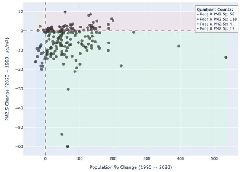
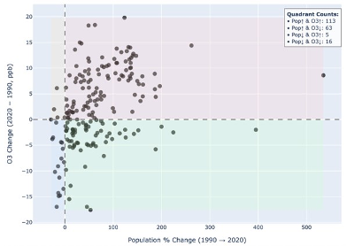
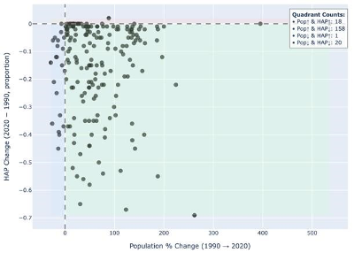
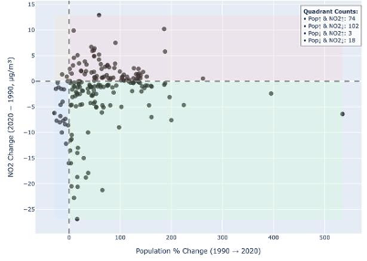
Across all pollutants we can see that the green quadrant has the largest share with PM₂.₅ having 118 countries, O₃ having 63 countries, NO₂ having 102 countries and the largest success story is HAP with 158 countries showcasing clear improvement in the air quality as they grow economically and socially. We can see that HAP shows the most widespread improvements, even in growing populations, likely reflecting successful clean cooking initiatives and energy transitions. PM₂.₅ and NO₂ show mixed success, with some growing countries improving and others worsening. O₃ presents the most challenging pattern with fewer success stories, reflecting its complex atmospheric chemistry.
There's also a small but worrying red flag which is the orange quadrant with 4 countries in PM₂.₅ category, 5 countries for O₃, 3 countries in NO₂ and only 1 country in HAP which suggests possible legacy pollution sources, poor regulations, or specific industrial sectors dominating the economy.
5.1.2 Understanding Regional Trends for Pollutants
As far as policy making is concerned, the focus should be in the red quadrant which requires high-priority intervention but to ensure that policy interventions are effective, it is essential to first identify the root causes of air quality deterioration. Pinpointing the exact sources of pollutants allows policymakers to design and implement targeted measures that address the problem at its origin, rather than relying on broad or misaligned solutions. However, the source of pollutants often varies significantly by region. For example, in South Asia, particularly countries like India, air pollution is heavily linked to older vehicles on the road, weak emissions standards, and slower adoption of electric vehicles. In contrast, in regions such as the Amazon basin in Brazil, mass forest fires are the dominant source of pollutants, releasing large amounts of smoke and particulate matter into the atmosphere. Meanwhile, in parts of Sub-Saharan Africa, especially in rapidly industrializing but under-regulated areas, heavy industrial activity and reliance on low-quality fuels are the primary contributors. Since each of these contexts requires a distinct policy response, it becomes critical to analyse pollutants at a more localized, regional level.
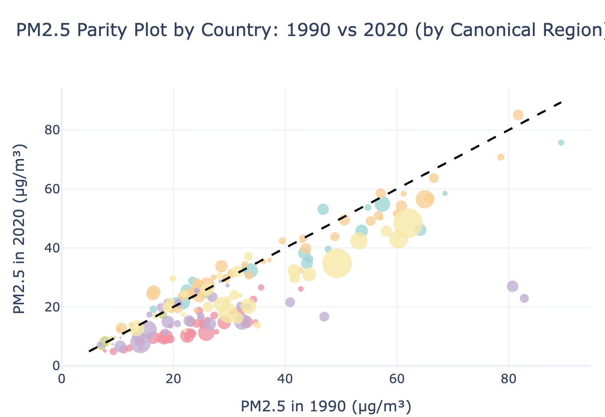
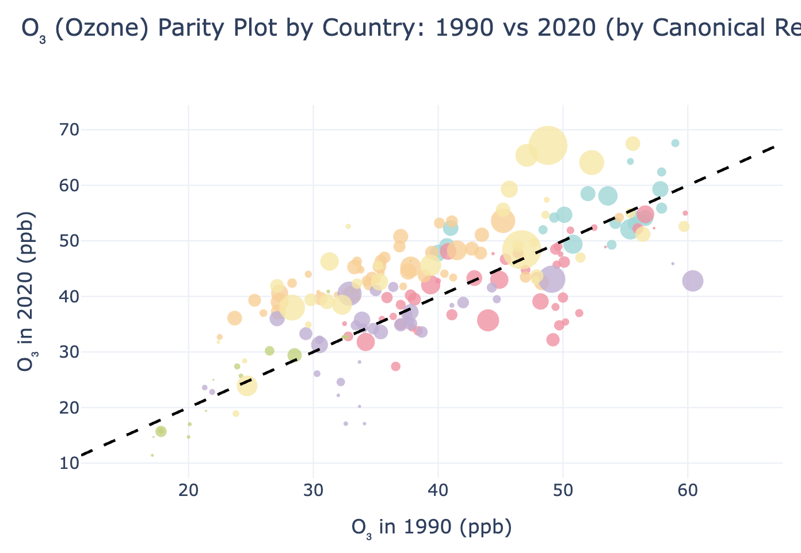
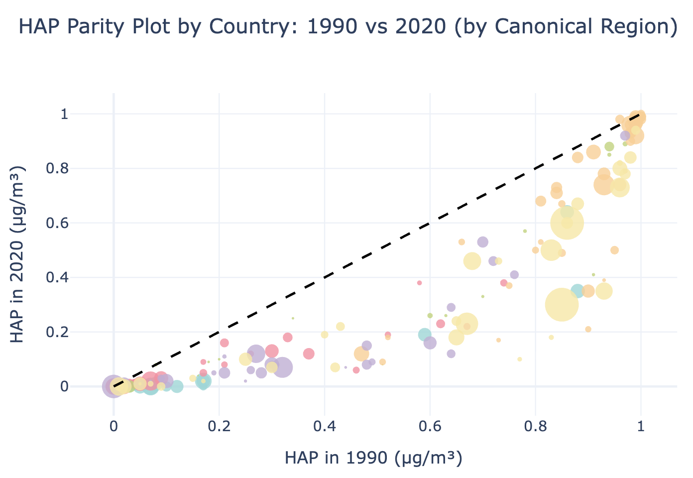
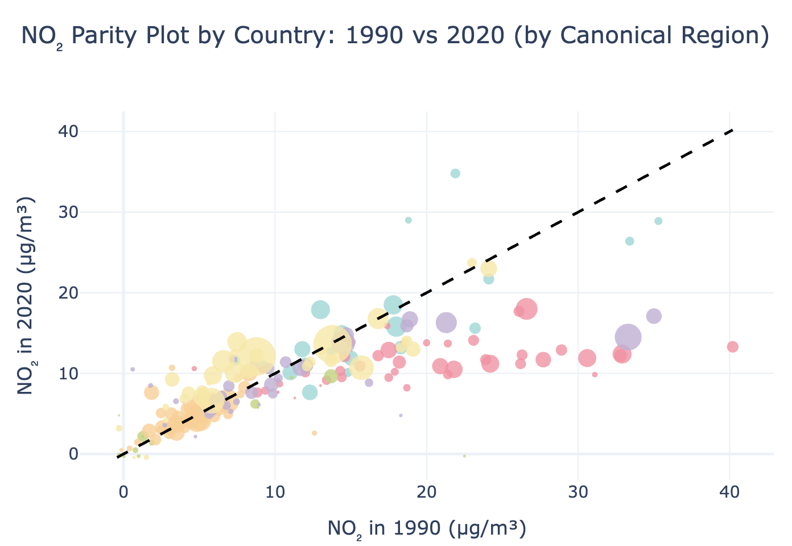
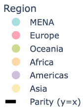
We utilised our canonical region mapping to summarise the granular regional definitions into more generalised regions and computed the change of all pollutants across regions. Where the bubble colour is region coded, the size of bubble is its population and the position is based on its pollutant exposure in 1990 (x-axis) and 2020 (y-axis) such that, every bubble below the parity explains improvement in the air quality, and every bubble above the parity line explains the deterioration of air quality with respect to every pollutant.
Africa
In almost every pollutant, African regions are clustered above parity with worrying bubbles. The increase of PM₂.₅ & NO₂ is worsening due to rapid urbanization, industrial growth, weak emission standards, and reliance on low quality fuels. The O₃ can be linked to more vehicles and unchecked NOₓ/VOCs. It tells the policymakers that Africa is at a tipping point. Without proactive regulations, worsening air pollution will severely affect rapidly urbanizing populations. Investments in clean transport, fuels, and industrial emissions standards is urgent.
Asia
Its real reduction despite growth is driven by China's clean air reforms and India's gradual vehicle standards. Asia is a proof that improvement is possible even with massive population and economic growth. Replicating China's regulatory playbook could accelerate gains elsewhere. However, it is worth noting that the indexes are far beyond WHO guidelines and still need quite a lot of improvement.
Europe & Americas
Europe and Americas consistently stayed below parity, with levels that were already close to WHO limits in 1990 showcasing that economically developed countries provides resources for regulations and precautions. Europe and Americas show that long-term regulatory consistency like air quality policies, vehicle standards, and industrial regulation worked. These can serve as models for other regions.
MENA
Some wealthy Gulf states improving, while others worsening due to oil combustion, motorization and dust storms. Ozone in MENA is variable but trending higher in majority of areas. MENA is a divided picture: richer economies clean faster while others lag.
Oceania
For Oceania, PM₂.₅, NO₂ and HAPs were mostly low to begin with, with modest further reductions. However, O₃ fluctuations tied more to natural conditions and imported pollution than local sources. Oceania generally performs well benefiting from lower industrialization and stricter environmental regimes.
5.1.3 Diving into Countries
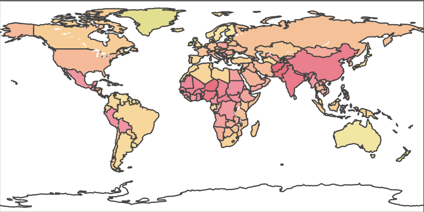
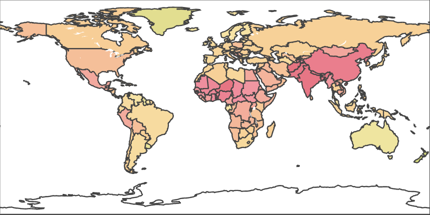
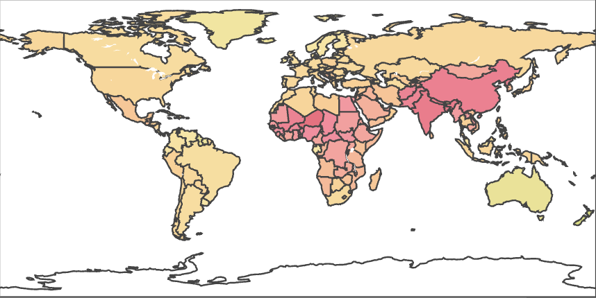
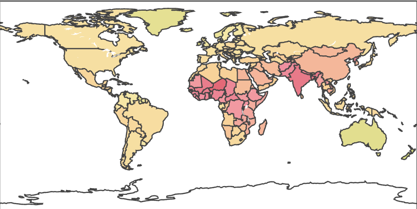
With all the discussion in mind, a clear snapshot of how pollutants behaved over three decades on a more granular level would make it clearer. An interactive plot with ability to hover and select each country to find exact indexes and details is available in the Jupyter notebook.
We calculated the Combined Pollution Index (CPI) by first normalizing the concentration levels of individual pollutants and then aggregating them into a single cumulative score. This composite metric reflects real-world exposure to multiple pollutants simultaneously, providing a more comprehensive basis for assessing potential health risks. Unlike single-pollutant analyses, which may obscure interactions and overlapping effects, the CPI highlights patterns and cumulative impacts that are otherwise invisible, offering a more authentic representation of environmental health hazards.
From this we can see that, South Asia consistently ranks highest with maximum CPI as compared to the world with countries like India, Pakistan, Bangladesh maintaining levels well above WHO limits. On the other hand, the very neighbouring East Asia, notably China shows a clear improvement keeping in mind that it's still above WHO limits but they still showed massive improvements in these three decades.
Sub-Saharan Africa emerges as a growing concern with several countries showing sustained high levels particularly in West Africa, more specifically Nigeria.
Again, as mentioned earlier Europe and North America display the most dramatic improvements. We can notice USA, Canada, Mexico and many others transitioning from yellow-orange to green-yellow, reflecting decades of environmental regulations.
Australia, Greenland & parts of South America maintain relatively low levels throughout the period.
This visualization starkly illustrates that air pollution is not just an environmental issue, it's an equity issue. While wealthy nations have largely solved their air pollution problems, billions of people in developing countries continue to breathe air that far exceeds safe levels. The burden falls disproportionately on the most vulnerable communities, children, the elderly, and those with limited access to healthcare exacerbating cycles of poverty and ill health. This contrast highlights a global imbalance: the technologies, policies, and resources that made clean air possible in wealthier countries remain out of reach for much of the world. Addressing air pollution, therefore, is not only about protecting the planet, but also about ensuring fairness, justice, and the right to breathe clean air for all.
Since the Combined Pollution Index (CPI) serves as an aggregate measure of overall air pollution, capturing the cumulative exposure to multiple pollutants within a given country. Accordingly, Table 6 presents the ten countries with the highest CPI values, representing the most severely polluted nations in terms of combined air quality degradation. These rankings highlight the countries experiencing the greatest cumulative pollution exposure, underscoring the urgency for targeted interventions and stricter environmental management policies.
| Rank | Country | CPI | PM2.5 | NO₂ | O₃ | HAP |
|---|---|---|---|---|---|---|
| 1 | Niger | 2.56 | 85.1 | 5.6 | 48.6 | 1.0 |
| 2 | Qatar | 2.37 | 75.7 | 28.9 | 67.6 | 0.0 |
| 3 | Bangladesh | 2.32 | 42.4 | 11.5 | 65.4 | 0.7 |
| 4 | India | 2.30 | 48.4 | 12.1 | 67.2 | 0.6 |
| 5 | Nepal | 2.28 | 45.7 | 9.2 | 67.5 | 0.7 |
| 6 | Mali | 2.25 | 56.8 | 6.8 | 45.4 | 1.0 |
| 7 | Benin | 2.24 | 51.0 | 4.7 | 53.5 | 0.9 |
| 8 | Burkina Faso | 2.24 | 58.5 | 5.5 | 47.9 | 0.9 |
| 9 | Togo | 2.23 | 51.7 | 5.4 | 53.2 | 0.9 |
| 10 | Gambia | 2.23 | 58.4 | 7.4 | 44.3 | 0.9 |
We can see as mentioned above, Niger from Africa as of 2020 had worst air quality overall with CPI value of 2.56 followed by Qatar whose economy is heavily driven by oil, gas, and petrochemical industries. These emit a wide range of pollutants from fine particulates to NO₂ contributing directly to poor air quality. Despite having a stable economy, much of Qatar's energy infrastructure, including desalination facilities and power plants, relies on fossil fuels that release significant emissions. We see in top 10 there is a large portion of West Africa with inclusion of Mali, Benin, Burkina Faso, Togo & Gambia.
However, their contribution to global pollution remains relatively small due to their limited population sizes. Ranking countries by pollution intensity alone provides insight into local air quality but does not accurately reflect their global impact. Treating all countries as equal risks overlooking opportunities to address pollution where it affects the most people.
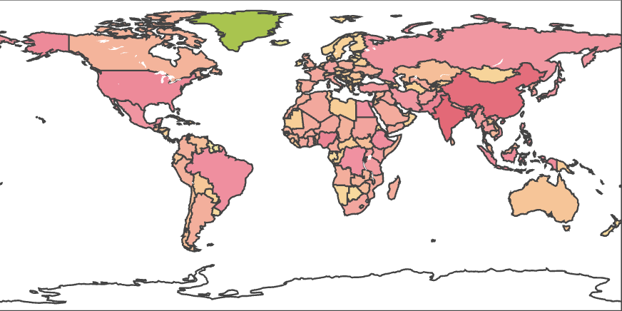
To address this, we developed an additional metric called Pollution Burden, which represents the global impact of a country's air pollution on people worldwide. Pollution Burden is calculated as the product of a country's CPI and its population. The resulting values are then transformed using a logarithmic function (log1p) to reduce skewness from highly populated countries. Finally, the values are normalized to a 0–100 scale to improve comparability and interpretability. This metric highlights not only where pollution is most intense but also where it affects the greatest number of people. Table 7 presents the top 10 countries having maximum pollution burden.
| Rank | Country | Pollution Burden | Population (M) | CPI | CPI Rank |
|---|---|---|---|---|---|
| 1 | India | 100 | 1403 | 2.30 | 4 |
| 2 | China | 97.5 | 1411.1 | 1.57 | 52 |
| 3 | Pakistan | 87.1 | 235 | 2.06 | 20 |
| 4 | Nigeria | 86.8 | 214 | 2.15 | 11 |
| 5 | Bangladesh | 85.6 | 166 | 2.32 | 3 |
| 6 | USA | 84.1 | 331.5 | 0.93 | 138 |
| 7 | Indonesia | 83.2 | 274.8 | 0.99 | 127 |
| 8 | Ethiopia | 81.8 | 118.9 | 1.88 | 31 |
| 9 | Brazil | 81.3 | 208.6 | 0.99 | 128 |
| 10 | Congo (Dem Rep) | 80.4 | 95.9 | 1.89 | 30 |
In this table, top 10 countries account for 64.3% of global pollution burden and 57.0% of global population. Now, it makes more sense that countries like India, China, Pakistan, Nigeria & Bangladesh which are far away from WHO guidelines and have pollution impact on far greater number of humans than those of which were defined in Table 6. Figure 5 is a snapshot of 2020 Pollution Burden per country.
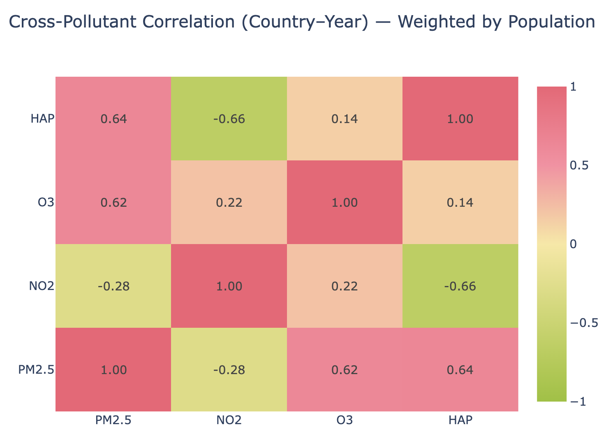
As mentioned in research gaps, it's very critical to understand the correlation of pollutants with each other, not just that but on a more granular level to understand the relationship between pollutants on regional scale. This would highlight the sources; the key reasons of pollution emission guiding the policy makers to pinpoint the exact reason and make better policies accordingly. Thus, we calculated cross-pollutant correlation by using our weighted Pearson correlation formula.
We firstly calculated the global correlation represented in Figure 6, and then a per-region cross-pollutant correlation shown in Figure 7.
PM₂.₅ shows very different relationships with other pollutants depending on the region. In Asia (r = 0.73) and Europe (r = 0.48), it has moderate to strong positive correlations with O₃. The reason for this is high O₃ levels can boost the formation of secondary particles under hot conditions and in cities with heavy NOₓ emissions (He, et al. 2024) (Wang, Zhao, Zhang, & Hu, 2023). In contrast, Oceania shows a strong negative correlation (r = −0.90), likely because PM₂.₅ contributes to O₃ loss through chemical reactions on particle surfaces (Qu, 2023). PM₂.₅ also has consistently high correlations with household air pollution (HAP) in most regions (r = 0.56–1.00), since both come from combustion sources. Africa, however, shows weaker correlations, suggesting different emission sources. Policies should therefore be adapted. The regions with high PM₂.₅ and O₃ links, strategies should focus on NOₓ and VOC control, while in Oceania, reducing particle emissions may be more effective.
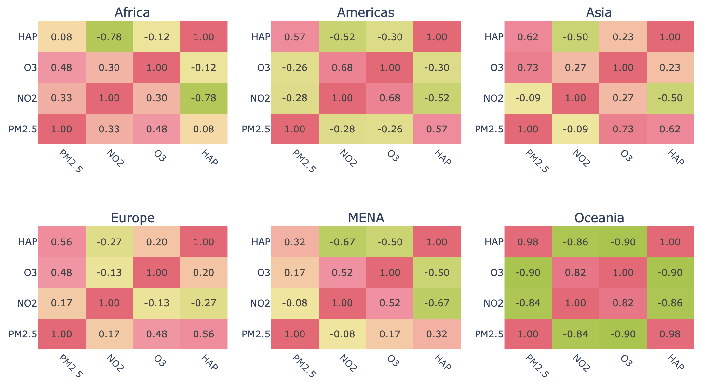
O₃ and NO₂ correlations reveal differences in chemistry and emissions between regions. In Africa (r = 0.30) and Oceania (r = 0.82), positive correlations suggest NOₓ-limited conditions, where O₃ increases with NO₂. In contrast, Europe (r = −0.13) and the Americas (r = 0.68) show mixed patterns shaped by urban and rural contrasts. Studies also show that PM₂.₅ levels in cities are strongly influenced by NO₂, CO, and SO₂, explaining almost half of the total variation (J., 2024). Household emissions worsen the situation as about 2.1 billion people still rely on kerosene, biomass, and coal for cooking, producing HAP that reduces O₃ formation (Organisation, 2021). This means O₃ control needs to be region-specific. NOₓ reduction is key in VOC-limited urban areas, while VOC reduction is more important in NOₓ-limited rural areas.
NO₂ patterns reflect differences in economic development and energy use. In Africa (r = −0.78) and the Middle East/North Africa (r = −0.67), NO₂ has strong negative correlations with HAP, while Europe shows only a weak negative link (r = −0.27). This suggests that as economies shift from biomass to fossil fuels, NO₂ levels rise even as HAP falls (Hickman, et al., 2021). Africa's unique pattern, where NO₂ has only a weak positive link with O₃ (r = 0.30) but a strong negative link with HAP, highlights the dominance of biomass burning. Biomass combustion releases PM, NOₓ, CO, SO₂, and other hazardous pollutants (Partnership for Policy Integrity, 2021). Correlations between NO₂ and PM₂.₅ also vary, positive in Africa (r = 0.33) and Europe (r = 0.17), but negative in Asia (r = −0.09) and Oceania (r = −0.84). These differences show how local weather and chemistry influence secondary particle formation. Policies should therefore promote clean household energy in Africa and MENA and focus on traffic and industry in more developed regions.
HAP (Household Air Pollution) correlations highlight the role of energy access. Across regions, HAP is strongly correlated with PM₂.₅ (r = 0.56–1.00), confirming that household emissions from solid fuels are a major source of fine particles (Pratiti, 2021). However, its correlations with other pollutants differ. In Africa, NO₂ and HAP correlations are strongly negative (r = −0.78), while in the Americas they are slightly positive (r = −0.30), reflecting different stages of energy transition. Globally, nearly half the population still uses biomass cookstoves, which generate CO, PM₂.₅, and toxic hydrocarbons (Fandiño-Del-Rio, et al., 2020). HAP–O₃ correlations are consistently negative, since household emissions usually occur indoors, at night, or in polluted conditions that prevent O₃ formation. This shows the urgent need for clean cooking programs in Africa and Asia, while high-income regions should target the last remaining solid-fuel users in disadvantaged communities.
Analysis — Mortality
5.2 Mortality
Having explored how pollutant levels such as PM₂.₅ and NO₂ have changed over the past three decades, it is equally important to examine how mortality has evolved in parallel. This allows us to better understand whether reductions in pollutant exposure have translated into health gains or whether other global forces are shaping mortality patterns.
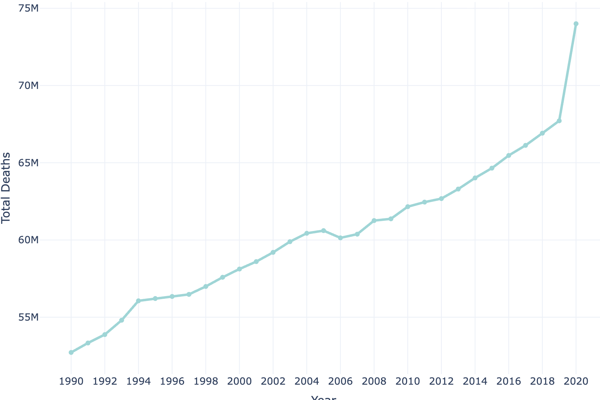
The first step is to look at total deaths from all causes worldwide. As shown in Figure 8, global deaths have steadily increased from around 57 million in 1990 to more than 83 million in 2020. For most of this period, the increase follows a gradual but steady upward trend. This growth is largely explained by population growth and ageing. As the world's population has increased, and as people are living longer, the number of older adults has grown rapidly. Since older age groups have higher risks of death, this naturally leads to more deaths overall, even though death rates within each age group have generally improved (Cheng, et al., 2020) (Li, Zhou, Wang, & al., 2023). What stands out in the data, however, is the sharp spike in 2020. Unlike the gradual increase of earlier years, this sudden jump is linked to the COVID-19 pandemic, which caused millions of excess deaths worldwide and disrupted normal mortality trends (Msemburi, et al., 2023). This shows how global health shocks, such as pandemics, can abruptly reverse long-term progress in mortality.
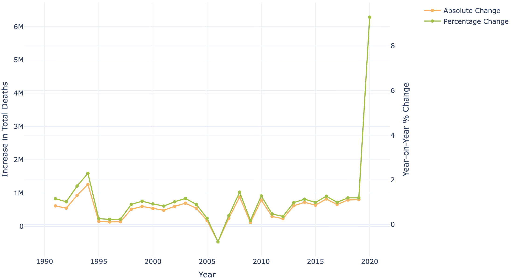
To understand this shift more clearly, Figure 9 shows the year-on-year change in deaths, both as absolute numbers and percentage change. From 1990 to around 2019, changes are relatively small and stable, with annual increases typically under 2%. This reflects the steady demographic drivers mentioned above. However, in 2020 the trend is broken: total deaths rose by more than six million compared to the previous year, an increase of over 8%. This spike is consistent with global health data showing excess mortality during the pandemic period. These trends show an image of mortality but doesn't really answer a very important question.
5.2.1 Is the world growing or dying overall?
To answer this, we calculated Crude Death Rate (CDR) — the number of deaths per 1,000 population, normalizing deaths relative to population size for fair comparison across countries. We also calculated Population Growth Rate (PGR), the year-over-year percentage growth scaled to per-1,000 units for direct comparability with CDR, and then the Growth–Mortality Gap between them.
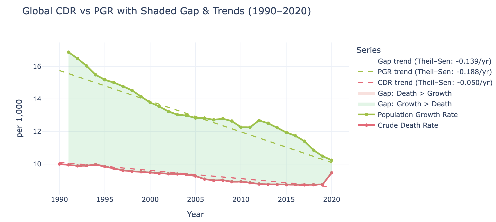
A very concerning insight generated from this graph shows that globally the growth rate of population is decreasing at an alarming trend of −0.18 every year, while the death rate is relatively consistent. We can see that from 1990 to 2020, the gap steadily shrinks toward zero, and by the late 2019 the two curves intersected. This marks the point where net growth effectively reached zero. The sharp rise in deaths during 2020 is largely attributable to the pandemic and can be considered an outlier, but even discounting that anomaly, the underlying trend indicates that population stagnation or decline is no longer a distant possibility but an emerging reality.
5.2.1.1 Growth Rates
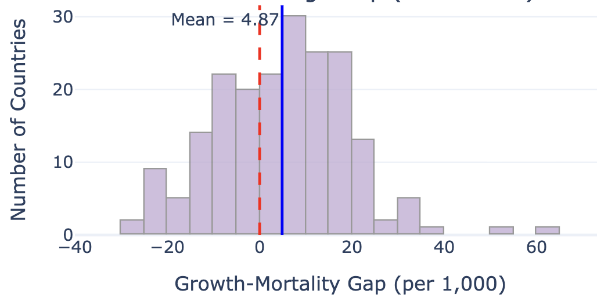
To see how the growth rates are fluctuating across the globe and which country is affected the most, we calculated the 30-year average of mortality gap between CDR and PGR, and Figure 11 shows the distribution of gap globally lies at 3.70 which is alarming. To see deeper insights into each country level, Figure 12 shows a world map of this 30-year average gap. Looking at the world map, clear regional patterns emerge in how the population growth and death rate has evolved over the past 30 years.
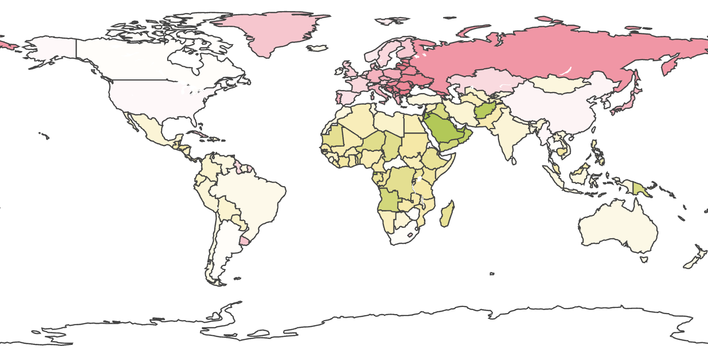
In Africa, most countries are shaded yellows and greens, indicating that population growth continues to outpace death rates. The Middle East shows a similar pattern of resilience. Countries such as Saudi Arabia, Iraq & Jordan are representing green zones. Fertility here has not fallen as sharply as in Europe or East Asia.
However a stark contrast is visible in Europe, which is dominated by deep reds. These shades reveal regions where deaths now exceed births, which shows a long-term demographic decline. Eastern Europe and Russia are particularly striking with the strongest negative gaps linked to aging populations, persistently low fertility rates and elevated mortality compared to Western Europe.
In Asia, the patterns diverge sharply between regions. South Asia including Pakistan, India & Bangladesh still shows positive zones reflecting modest but positive gaps. However the trajectory is clearly downward. East Asia by contrast is marked in reds, reflecting severe demographic challenges faced by China, Japan and South Korea. These countries are already experiencing population shrinkage, driven by a mix of low fertility, rapid aging and rising mortality.
Taken together, the map reveals a world divided. Global North including Europe, East Asia, North America, and Oceania is already at or near demographic decline, while Global South particularly Africa, Middle East & part of South Asia remains in a growth phase.
| Growing Countries with positive gaps | Shrinking Countries with negative gaps | ||
|---|---|---|---|
| Country | 30 Year Gap Average | Country | 30 Year Gap Average |
| Qatar | 61.73 | Latvia | −30.95 |
| UAE | 52.23 | Bulgaria | −29.67 |
| Equatorial Guinea | 34.75 | Serbia | −27.35 |
| Jordan | 33.76 | Lithuania | −27.28 |
| Bahrain | 31.68 | Georgia | −25.07 |
| Saudi Arabia | 31.06 | Croatia | −24.78 |
| Kuwait | 31.01 | Republic of Moldova | −24.42 |
| Afghanistan | 29.90 | Ukraine | −24.10 |
| Oman | 28.53 | Estonia | −23.54 |
| Yemen | 24.80 | Romania | −23.22 |
5.2.2 What's causing death the most?
Understanding global mortality requires more than counting deaths; it is equally important to visualise the underlying causes and how different diseases contribute to the overall burden. By examining both proportional shares and absolute numbers, we can see not only which conditions dominate worldwide but also how a wider set of causes shapes the mortality landscape.
The treemap in Figure 13 presents a proportional view of mortality causes, with each block sized according to its share of global deaths. This allows both leading and smaller contributors to be compared in a single visual.
Cancers and ischemic heart disease dominate, occupying the largest spaces and confirming their role as the two leading causes of death worldwide. Other major non-communicable diseases, such as chronic obstructive pulmonary disease (COPD), ischemic stroke, and intracerebral hemorrhage, also feature prominently, underscoring their importance in global health.
The treemap also highlights the persistence of communicable diseases such as malaria, measles, and meningitis, which remain significant in low- and middle-income regions where healthcare, sanitation, and vaccination gaps are common. Alongside these, aging-related conditions like Alzheimer's disease and other dementias appear, reflecting demographic shifts in high-income countries.
Less frequently discussed causes, including falls, drowning, and neonatal disorders, also stand out in the figure, reminding us that injuries and early-life conditions remain part of the global mortality profile.
By showing mortality shares, the treemap complements the following figure, which shifts focus to the absolute number of deaths from the top ten causes worldwide.
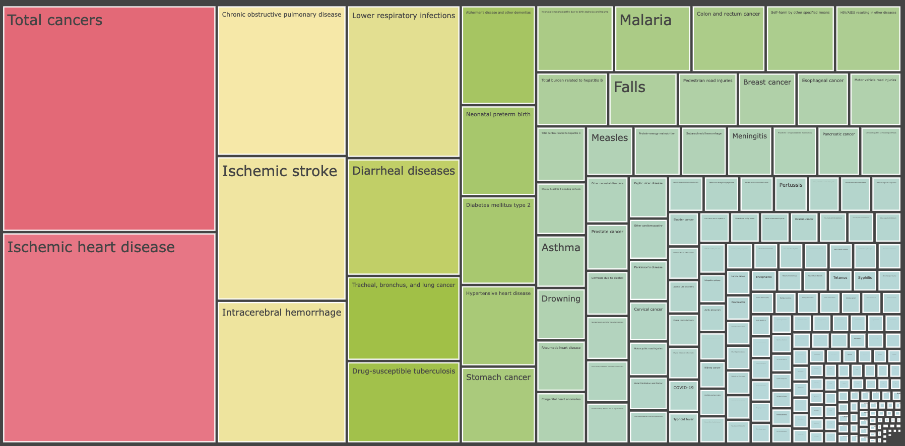
While the treemap illustrated proportional shares, Figure 14 focuses on the absolute number of deaths from the ten leading causes worldwide. The figures are striking: cancers and ischemic heart disease dominate, with approximately 231.6 million and 215.7 million deaths respectively. Together, they demonstrate the growing dominance of non-communicable diseases (NCDs), which the World Health Organization recognises as the primary global health challenge (Organisation, 2021).
Other major NCDs also feature prominently. Chronic obstructive pulmonary disease (93.2 million deaths), ischemic stroke (89.4 million), and intracerebral hemorrhage (88.2 million) reflect the burden of cardiovascular and respiratory conditions, largely driven by long-term exposures such as smoking, air pollution, and lifestyle-related risk.
Among communicable diseases, lower respiratory infections (82.8 million deaths), diarrhoeal diseases (63.7 million), and tuberculosis (44.7 million) remain significant. Although lower in total numbers compared to cancers or heart disease, these causes are concentrated in low- and middle-income countries, where gaps in healthcare, sanitation, and vaccination persist (Organisation, 2021).
Other causes highlight demographic and environmental shifts. Alzheimer's disease and other dementias (35.8 million deaths) reflect the impact of aging populations, particularly in high-income countries, while tracheal, bronchus, and lung cancer (46.0 million deaths) underscores the combined effects of smoking and environmental exposures.
Taken together, Figure 14 reinforces the picture of a dual burden of disease. On one side, NCDs dominate mortality worldwide, especially in developed regions. On the other, communicable diseases, though smaller in share, still claim tens of millions of lives each year in resource-limited settings. This pattern highlights the urgent need for health strategies that reduce chronic, lifestyle-related risks while continuing to address preventable infectious diseases, with the goal of reducing premature mortality and improving global outcomes.
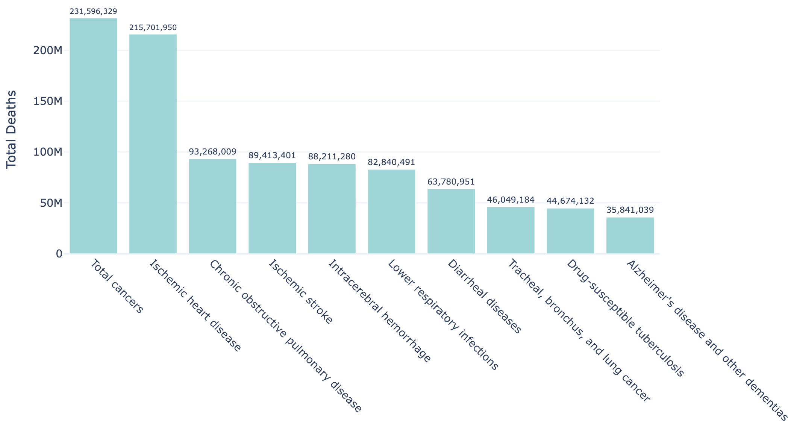
Viewed together, the treemap and the top 10 ranking provide complementary perspectives: one reveals the relative shares of diverse causes, while the other underscores the absolute scale of leading killers. Both make clear that the global mortality burden is dominated by non-communicable diseases, but that communicable diseases and other causes remain critical challenges, particularly in low-resource settings.
Analysis — Impact of Pollutants on Mortality
5.3 Impact of Pollutants on Mortality
The analysis of pollutant trends across different regions over the past three decades highlights notable associations with mortality patterns. To assess the extent of this impact, mortality rates were calculated per 100,000 population, and population-weighted correlations between pollutant levels and mortality rates were computed. This approach provides insight into the relative influence of individual pollutants on mortality outcomes and allows identification of specific causes of death most strongly associated with environmental exposures.
Table 9 summarizes the number of diseases that exhibit positive correlations with each pollutant across different correlation ranges:
| Pollutant | 0.4 ≤ r < 0.5 | 0.5 ≤ r < 0.6 | 0.6 ≤ r < 0.7 | 0.7 ≤ r < 0.8 | 0.8 ≤ r < 0.9 | 0.9 ≤ r < 1 |
|---|---|---|---|---|---|---|
| HAP | 27 | 24 | 6 | 0 | 0 | 0 |
| PM₂.₅ | 10 | 4 | 2 | 1 | 0 | 0 |
| NO₂ | 21 | 17 | 6 | 0 | 0 | 0 |
| O₃ | 1 | 0 | 1 | 0 | 0 | 0 |
As shown, Household Air Pollution (HAP) and Nitrogen Dioxide (NO₂) exhibit the strongest associations with disease burden, with many causes demonstrating correlations above 0.5. In total, 55 diseases were found to have correlation coefficients exceeding 0.5, suggesting a significant influence of pollutant exposure on mortality. Complete lists of these causes by pollutant are available in the code notebooks, with supporting screenshots provided in the appendix.
Further analysis revealed that deaths from these 55 pollutant-linked diseases account for, on average, 36% of total mortality across the three decades under study (Figure 15). This finding underscores the substantial contribution of environmental pollutants to population-level health outcomes and highlights the critical role of pollutant control in reducing premature mortality. Now from these 55 significant causes, we've taken top 10 causes per pollutant and filtered our dataframe to perform predictive modelling discussed in the next section.
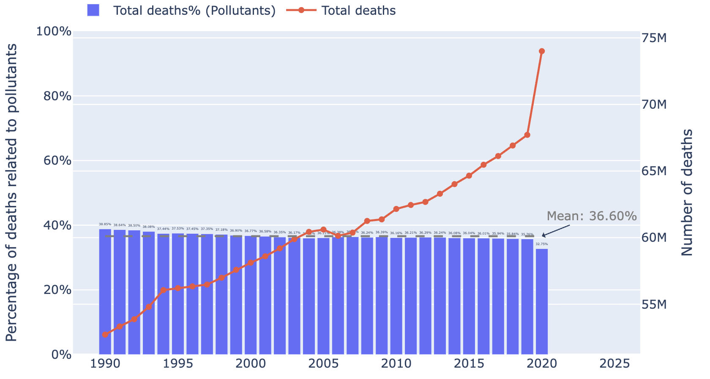
Predictive Modelling
Understanding the relationship between pollutant exposure and mortality rates is crucial for public health policy development, environmental regulations and early warning systems. We created this global dataset and explored key patterns and now this analysis employs a comparative machine learning approach evaluating seven different algorithms ranging from linear models to advanced ensemble methods. The goal is to identify the most effective approach for predicting air pollution-related mortality.
6.1 Feature Selection
Predictors
In the last section, we computed that there are 55 causes which strongly correlate with pollutants having r value greater than 0.5 and from those 55 causes we took top 10 causes per pollutant ultimately resulting in 30 unique causes of deaths. With this selection from the complete dataframe, we were left with 12% of rows (~189,720) but it was much more meaningful since all causes are not related to pollutants, adding those causes would add noise to the dataset. For example, including homicide or accident deaths (which aren't caused by pollution) distracts the model from concentrating on pollution-related mortality only.
We dropped columns that won't be used as predictors. We used only the "Mean" exposure values for pollutants and dropped the "Lower"/"Upper" exposure bounds (these are confidence interval limits and are highly correlated with the mean). Keeping only the mean PM₂.₅, NO₂, O₃, and HAP exposures avoids multicollinearity and reduces feature count. Likewise, we dropped "Deaths Lower" and "Deaths Upper" (if those represent uncertainty ranges), since we'll predict the central mortality rate.
Target Variable
We ensured the target Mortality Rate is computed for each record as: Mortality Rate = (Deaths / Population) × 100,000. We used this standardized mortality rate as the outcome so that country size is accounted for.
6.2 Feature Engineering
Log Transformation
We applied a logarithmic transform to the mortality rate to handle right-skewed distribution. Death counts and rates can vary widely between countries (large populations) and causes, and a log transform will stabilize variance and normalize the distribution. This often leads to more accurate and robust models by reducing the influence of extreme values.
Similarly, we applied log1p to highly skewed input features: population size and pollutant exposure levels. Pollution exposure data (especially PM₂.₅ or NO₂ concentrations) and population counts usually have long-tailed distributions. Logging these features makes their distributions more Gaussian and linearizes multiplicative relationships, which helps linear models fit better and can improve tree-based model performance as well. For instance, an increase from 10 to 20 μg/m³ PM₂.₅ might have a bigger health impact than 0 to 10, and using log emphasizes relative changes.
Scaling
After log transformation, the features are more comparable in scale. So, we standardized continuous features especially for linear/ridge/lasso models so that coefficients are on comparable scales. This prevents features with larger numeric ranges from dominating just by scale. Also, since tree-based models are scale-invariant, normalization is less critical for those.
Encoding
We implemented one-hot encoding for categorical features like region name and cause of death since most ML models can understand only numerical variables.
6.3 Model Selection
A range of models was chosen to balance interpretability, flexibility, and predictive power. Linear models (Linear Regression, Ridge, Lasso) provide a baseline and are easy to interpret but may miss complex relationships. XGBoost and CatBoost are advanced tree-based models known for handling non-linearities and categorical data. Random Forest, an ensemble of decision trees, is robust to overfitting and effective for tabular data with mixed feature types.
- Linear Regression
- Ridge Regression
- Lasso Regression
- Random Forest
- XGBoost (Gradient Boosting)
- CatBoost
6.4 Comparisons & Results
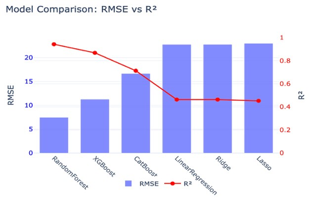
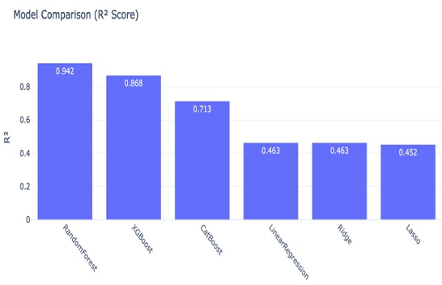
The dual-axis plot showing both RMSE and R² for each model provides a comprehensive view of predictive accuracy and error. The results plots show that Random Forest achieved the best performance (lowest RMSE, highest R²) on the test set. This indicates it captured the underlying patterns in the data more effectively than other models.
The Random Forest can be seen to be performing better than the rest of the models because the dataset has nonlinear relationships and Random Forest can model complex, non-linear interactions between pollutants, population, and mortality rates, which linear models cannot. It automatically captures interactions between features (e.g., combined effects of multiple pollutants). Random Forest is less sensitive to outliers and noisy data, which are common in real-world environmental datasets. Unlike boosting models, Random Forest performs well with default settings and is less prone to overfitting. Feature importance scores from Random Forest help identify key drivers of mortality.
In summary, Random Forest's flexibility and robustness make it an excellent choice for this predictive task, outperforming both linear and more complex boosting models in this context.
Conclusion
This comprehensive exploratory analysis reveals a world in environmental and demographic transition, where progress in reducing traditional pollutants exists alongside emerging challenges and shows global inequalities. From 1990 to 2020, we observe a remarkable success story in pollution control where household air pollution decreased by 36%, PM₂.₅ by 21%, and NO₂ by 18% demonstrating that coordinated global efforts can yield significant environmental improvements. However, this progress is overshadowed by the alarming 13.5% increase in ozone levels, signalling a new frontier in air quality management that requires urgent attention.
The geographical distribution of pollution burden reveals a troubling pattern of environmental injustice. While Sub-Saharan African nations like Niger, Mali, and Burkina Faso face the highest pollution intensity per capita, it is the densely populated developing countries India, China, Pakistan, Nigeria, and Bangladesh that bear the greatest absolute human impact when population size is considered. This analysis exposes a critical insight: the countries with the most people exposed to dangerous pollution levels are precisely those undergoing rapid economic development, creating a perfect storm of environmental and public health challenges.
Perhaps most concerning is the demographic backdrop against which these pollution patterns unfold. Global population growth rates are declining at an unprecedented −0.18 per 1,000 annually, projecting a stagnation in world growth rate merely by the late 2020s if current trends continue. This demographic shift, combined with the strong correlations observed between different pollutants (particularly PM₂.₅, NO₂, and HAP), suggests that countries struggling with air quality face compound challenges that require comprehensive, multi-pollutant interventions rather than piecemeal approaches.
The mortality analysis reveals profound regional disparities in the balance between population growth and death rates. While Gulf states demonstrate robust growth-mortality gaps driven by economic prosperity, Eastern European and post-Soviet nations show concerning patterns where mortality increasingly outpaces population growth. These demographic fault lines, intersecting with pollution exposure patterns, create a complex global health landscape where environmental interventions must be carefully calibrated to local demographic and economic realities.
Ultimately, this analysis demonstrates that air pollution and mortality are not merely environmental or health issues — they are fundamental challenges of global equity and sustainable development with almost 36% of deaths strongly influenced by pollutants. The data compels us toward a future where pollution reduction efforts must prioritize population-weighted impact, recognizing that effective global health policy lies not just in cleaning the most polluted places, but in protecting the greatest number of people from preventable environmental harm.